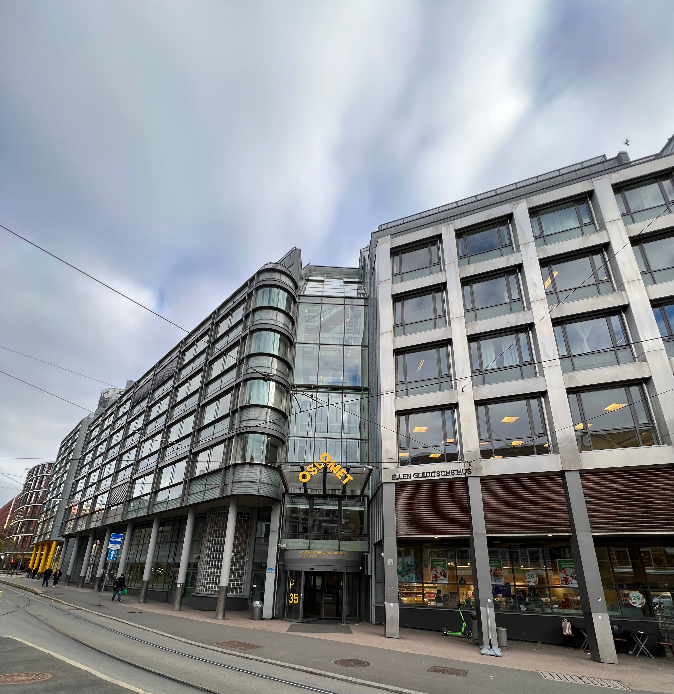

Oslomet
OsloMet - Oslo Metropolitan University is one of the leading universities of higher education and research, located in Norway's capital, Oslo. With a strongly engaged faculty and a wide range of study programmes, OsloMet is dedicated to shaping the future by educating, exploring and influencing society in a positive way.
Our institution is rooted in values such as diversity, inclusion and innovation. We believe in the power of knowledge to create change and sustainable development. Through research and teaching, we work to solve the challenges of today's world and create opportunities for a better future.
Whether you are a student, researcher or visitor, we welcome you to be part of our dynamic university community. Together we can explore, learn and help shape tomorrow's possibilities.
Photo: Sander Sletvold
Welcome
Take some time to explore our pages. We hope you will find inspiration, insights and opportunities that will enrich your connection with OsloMet and its vibrant academic environment. Thank you so much for being here, and welcome to our corner of the OsloMet community! Vi håper at du bruker inspirasjonen som du får av siden til å hjelpe med å gjøre verden til et bedre, fordi forandring starter med menneske i speilet. Forandre Oslomet til det bedre er noe som sitter nært hjertet hos de ansatte på Oslomet.